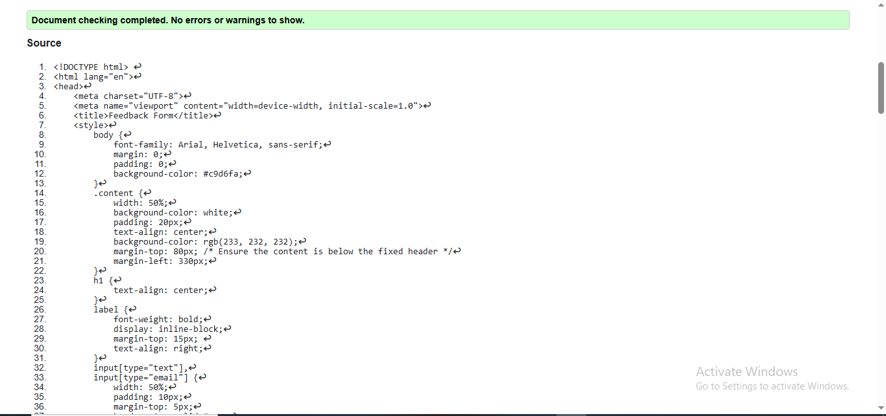
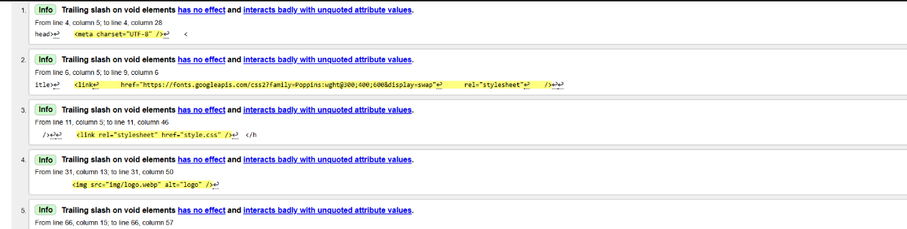

Feedback Page validation report
Short reflection on the validation
Back to Page Editor page
Team Page validation report
Short reflection on the validation
Back to Page Editor page
Content Page validation report
Short reflection on the validation